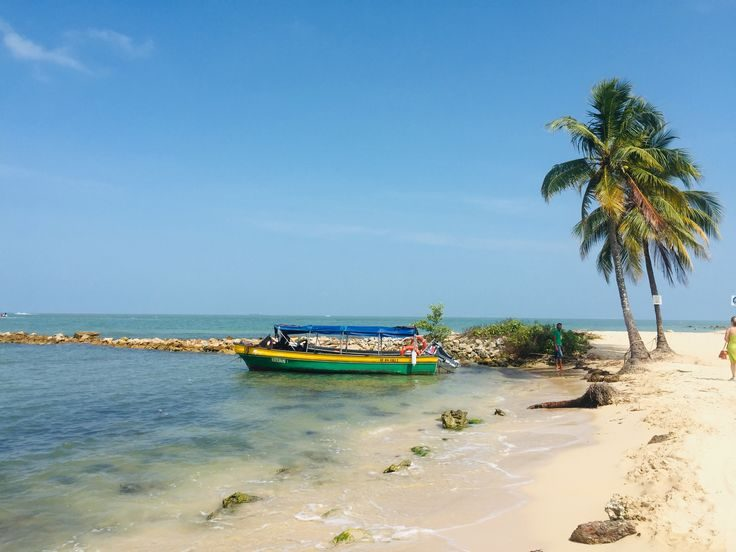
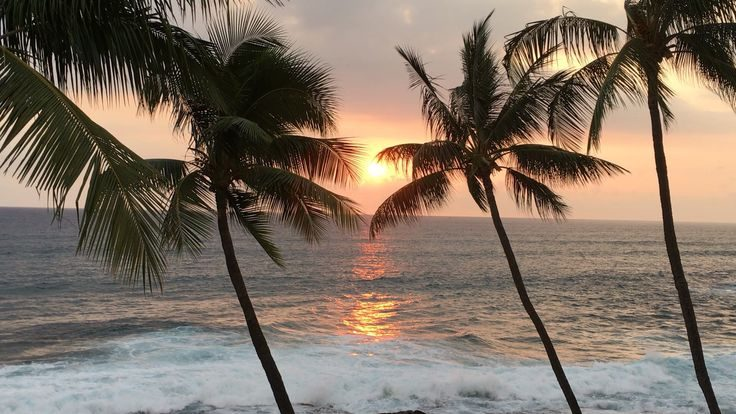
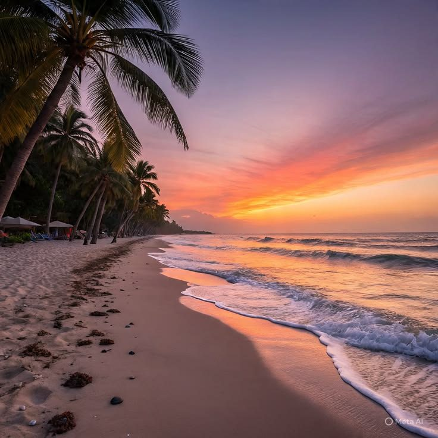
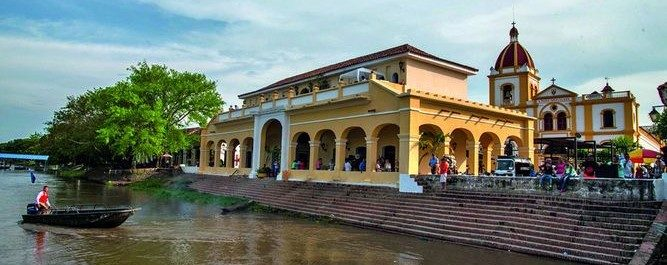
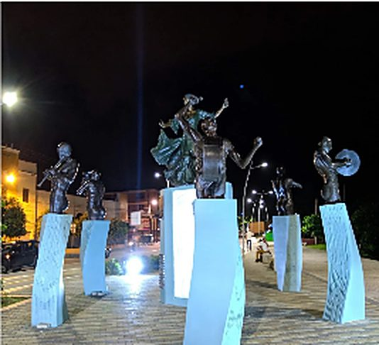
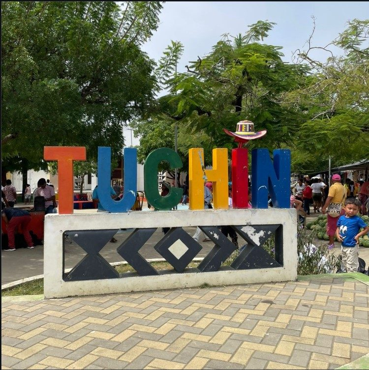
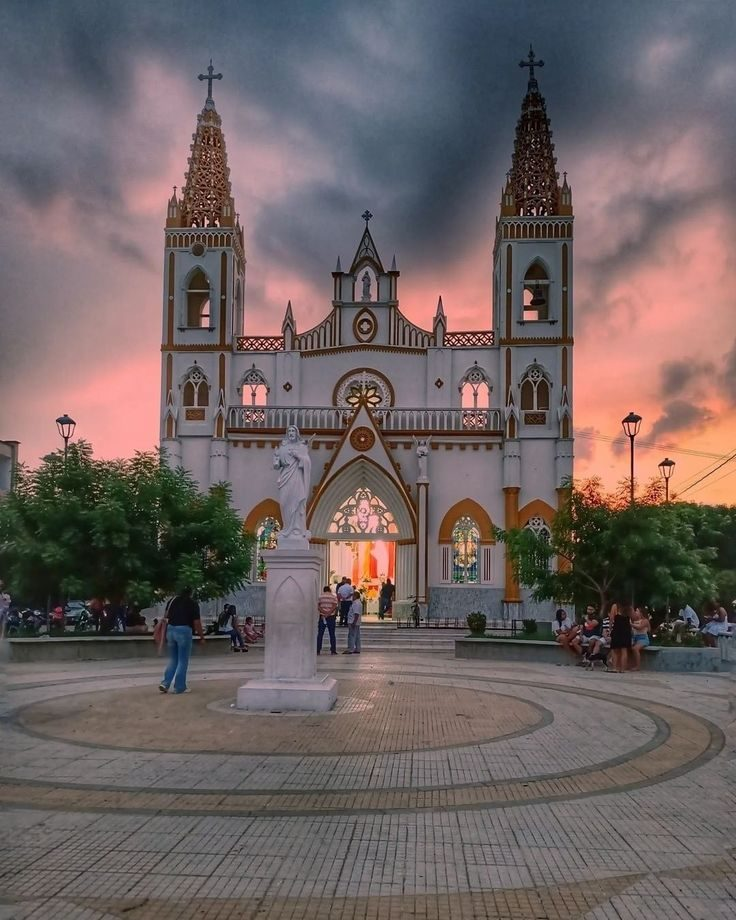
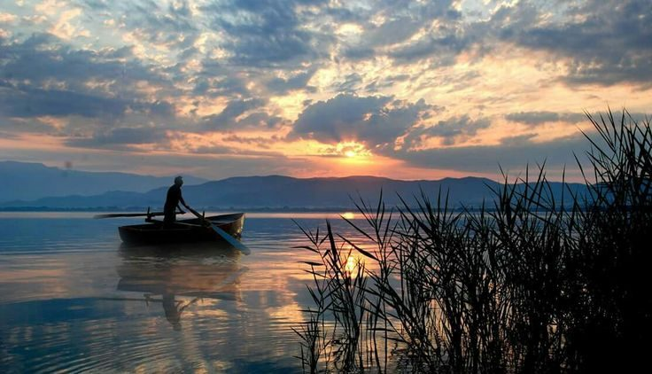
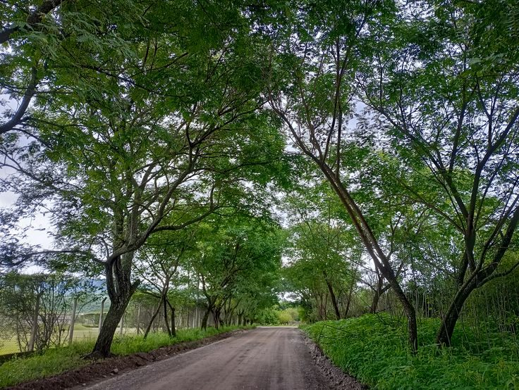
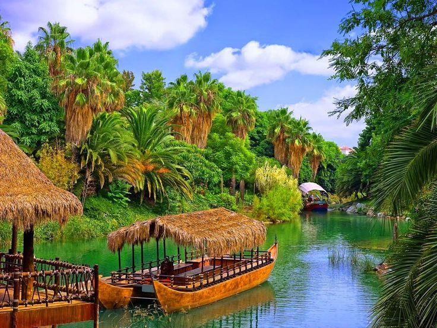

DESTINOS DE CÓRDOBA
Playas, pueblos con historia y naturaleza por descubrir
Playas

San Bernardo del Viento
Playas amplias y la desembocadura del río Sinú en el mar Caribe.
Sol y playa
Moñitos
Atardeceres sobre el mar y pueblo de pescadores.
Sol y playaGastronomía

Puerto Escondido
Costa tranquila rodeada de palmeras y bosque seco.
Sol y playaNaturaleza
Pueblos y Municipios

Lorica
Arquitectura republicana a orillas del Sinú y su mercado público.
CulturaHistoria

Montería
La capital ganadera y su Ronda del Sinú.
CiudadCultura

Tuchín
Cuna del sombrero vueltiao y la artesanía zenú.
ArtesaníasCultura zenú

Ayapel
Pueblo de tradición religiosa junto a la ciénaga.
CulturaNaturaleza
Naturaleza

Ciénaga de Ayapel
Uno de los humedales más grandes del país, ideal para avistar aves.
Ecoturismo

Tierralta y Paramillo
Puerta de entrada al Parque Nacional Natural Paramillo.
AventuraNaturaleza

Río Sinú
Paseos en canoa entre palmeras y vegetación tropical.
Aventura